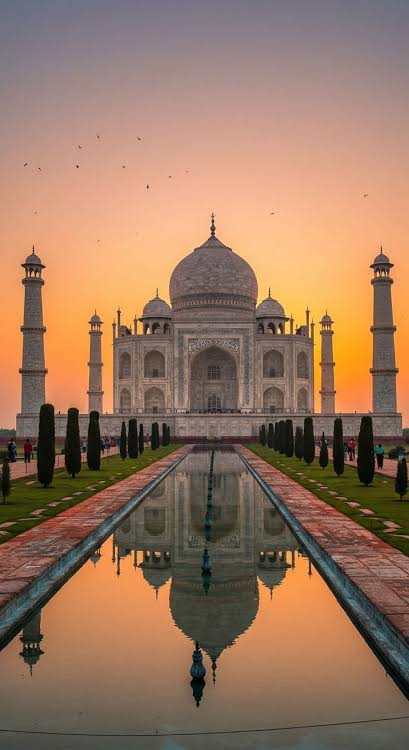
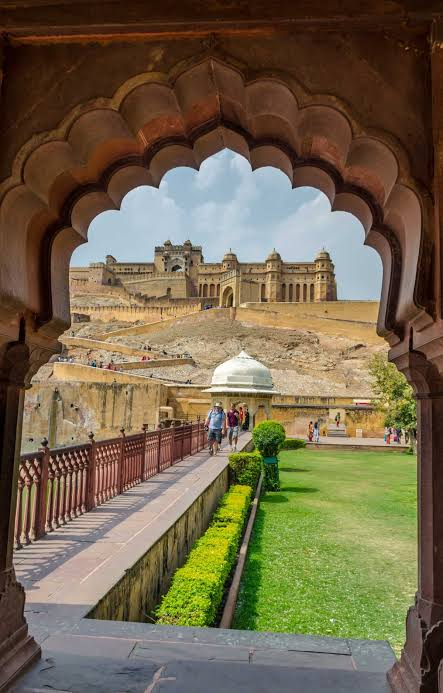
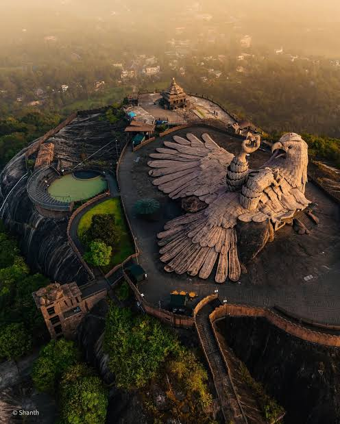

FAMOUS PLACES
- AGRA
- The Taj Mahal is a magnificent white-marble monument built by Emperor Shah Jahan. It is famous around the world for its beautiful architecture and is considered a symbol of love.

- GOA
- Goa is a popular tourist destination known for its beautiful beaches, lively atmosphere, and Portuguese-influenced culture. It is also famous for its scenic landscapes and historic churches.

- JAIPUR
- Jaipur, known as the Pink City, is famous for its magnificent forts, palaces, and colorful markets. It reflects the rich history and royal heritage of Rajasthan.

- MANALI
- Manali is a beautiful hill station surrounded by mountains and green valleys. It is popular for its pleasant scenery, snow-covered landscapes, and adventure activities.
- KERELA
- Kerala is known for its lush greenery, peaceful backwaters, beautiful beaches, and unique culture. It is often called “God’s Own Country” because of its natural beauty.

EXPLORE MORE:
Learn more about India
Visit incredible India
BACK TO HOME